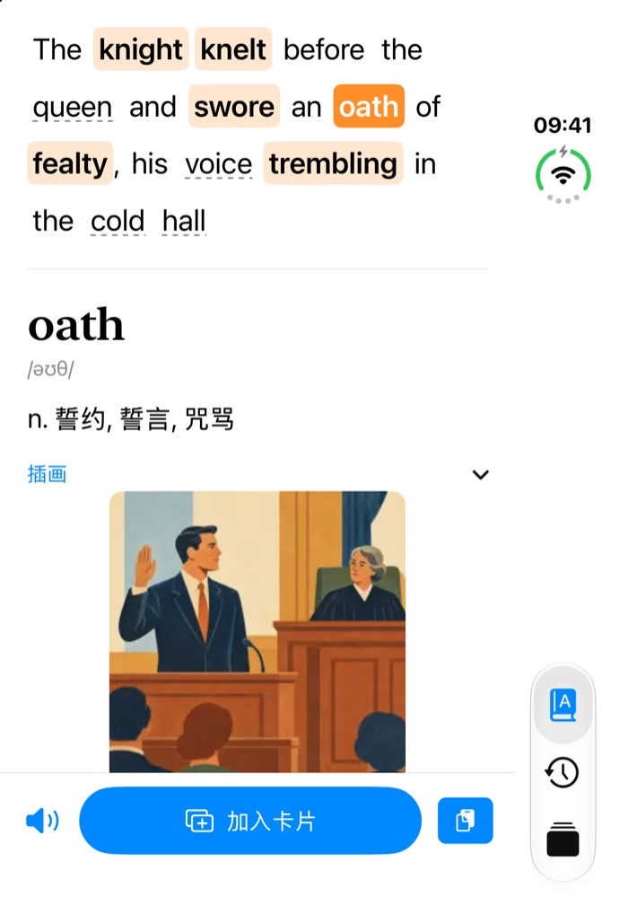
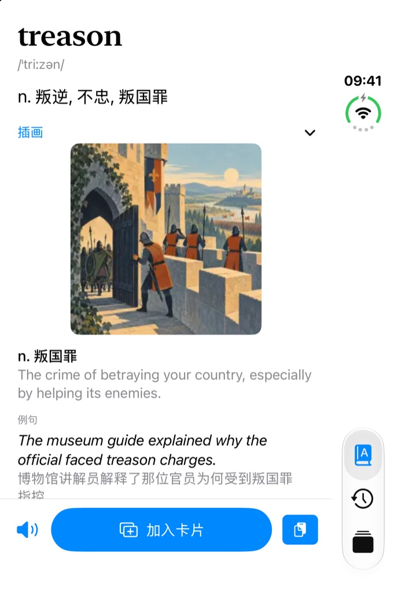
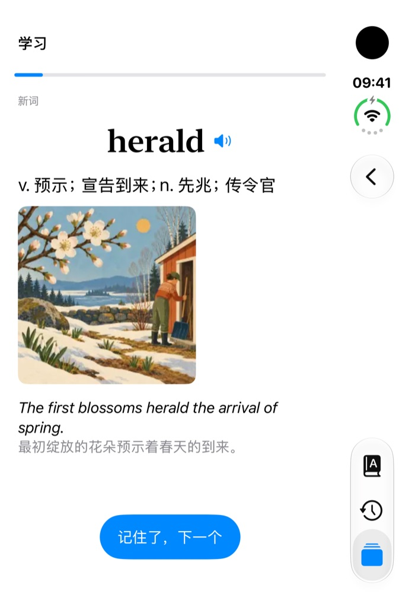
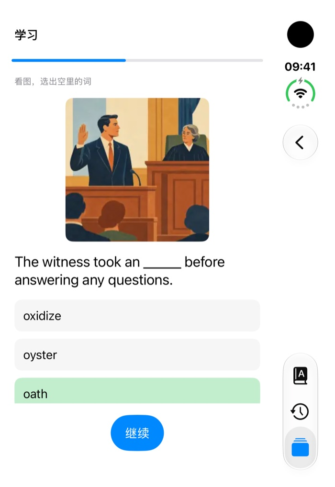
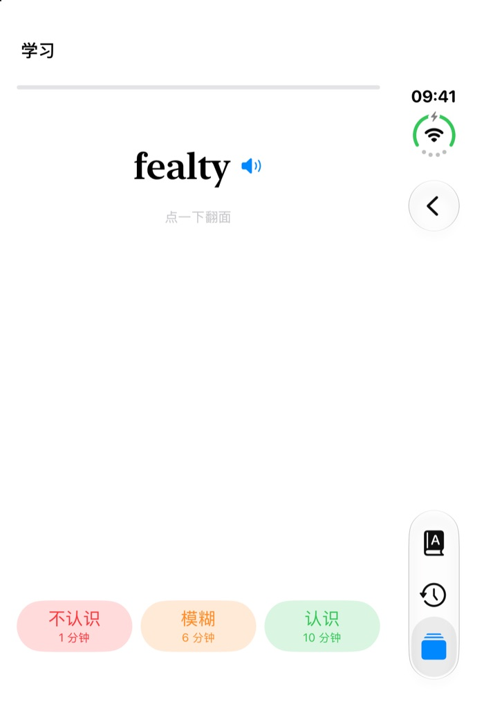

给 iPhone 折叠屏分屏阅读做的英语查词和背词 App。在书里拷贝一个词，右边马上出中文释义；顺手做成卡片，按记忆曲线每天复习。词典装在 App 里，不联网也能用。
Snow had come early to the north that year, and the torches along the walls burned low and blue.
The knight knelt before the queen and swore an oath of fealty, his voice trembling in the cold hall.
拷贝No one spoke. Somewhere above them a banner snapped in the wind, and the old steward closed his eyes.

左边是书，右边是三脚猫背单词。整句拷贝过来，难词自动标出来。
手指只碰左边的书。右边不用点，拷贝完释义就在那里。
手机展开，左半屏开「图书」或任何能选字的阅读 App，右半屏开三脚猫背单词。
在书里长按选中，点「拷贝」。右边自动显示释义；整句会把难词标出来，点哪个看哪个。
想记住的词点「加入卡片」，拷贝的原句一起存下。每天打开「今日待复习」过一轮。
第一版只做读书时最常碰到的几件事：查词、看懂整句、记住它。
App 在屏幕上时会留意剪贴板，你一拷贝，右边就换成这个词的释义，不用粘贴、不用点搜索。

拷贝一整句，句子用大字放在上面。常用 2000 词以外的词是橙色底；其他名词、动词、形容词、副词带虚线，也能点。冠词、介词、代词这些不能点，人名也跳过。
点一个词，句子下面出它的完整释义，句子一直留着，接着点下一个。这时加入卡片，这句话会作为「原句」一起存进卡片。
常见的阅读词汇来自开源词库 Word Atlas：每个词一张插画，加上中文义项、英文释义、例句和中文翻译、常用搭配、词族。其他词用 ECDICT 的简明中文释义。

复习排程用 FSRS-6 算法，目标记忆率 90%。每张卡记住的程度不一样，下次出现的时间也不一样，三个按钮下面直接写着这张卡下次什么时候再出现。


查词要读剪贴板，所以这件事写清楚。
切到后台就不读了。读到的内容只用来查你刚拷贝的词。
词典、插画、卡片、复习记录都在手机里。App 不发任何网络请求，没有统计、没有账号。
设置里打开「暂停取词」，拷贝什么都不会查。暂停期间查词页顶部一直有橙色提示，点「恢复」就恢复。
iOS 默认每次读剪贴板都问一次。第一次打开 App 会引导你把「从其他 App 粘贴」设为「允许」，之后不再弹窗。
App 还没上架 App Store。现在可以用自己的 Apple 开发者账号从源码装到手机上。
下载词典原始数据：ECDICT 的 CSV，和 Word Atlas 的数据与缩略图（约 84 MB）。
mkdir -p pipeline/raw/ecdict pipeline/out curl -L -o pipeline/raw/ecdict/ecdict.csv \ https://raw.githubusercontent.com/skywind3000/ECDICT/master/ecdict.csv git clone --depth 1 --filter=blob:none --sparse \ https://github.com/designfuchen/word-atlas.git pipeline/raw/word-atlas-repo git -C pipeline/raw/word-atlas-repo sparse-checkout set public/atlas/thumb data
生成 App 内置的词库 pipeline/out/foldpilot.sqlite：
python3 -I pipeline/scripts/build_brief_db.py \ pipeline/raw/ecdict/ecdict.csv pipeline/out/foldpilot.sqlite python3 -I pipeline/scripts/build_atlas_db.py \ pipeline/raw/word-atlas-repo/data/word-atlas.json \ pipeline/raw/word-atlas-repo/public/atlas/thumb \ pipeline/out/foldpilot.sqlite
生成 Xcode 工程并打开：
xcodegen generate open FoldPilot.xcodeproj
在 Xcode 的 Signing & Capabilities 里选你自己的开发团队，把 Bundle Identifier 改成你自己的（例如 com.yourname.foldpilot），连上 iPhone，运行。
这个 App 站在下面几个开源项目上。
| 项目 | 用在哪里 | 授权 |
|---|---|---|
| Word Atlas | 7,298 个词的插画、中文义项、例句、搭配、词族；学习流程和四种题型参照它的代码改写成 Swift。本页截图里的插画也来自它。我们改动了排版和数据格式。 | 文字和插画 CC BY 4.0，代码 MIT。署名：Word Atlas contributors |
| ECDICT | 简明中文释义、词频、词形变化 | MIT |
| swift-fsrs | FSRS-6 复习排程 | MIT |
本项目的代码以 MIT 协议开源。「三脚猫背单词」这个名字和橘猫 logo 是 Han 的原创作品，保留所有权利，不在 MIT 授权范围内：只用于本项目，不得用在其他 App、网站或产品里；复刻时请换成你自己的名字和图标。